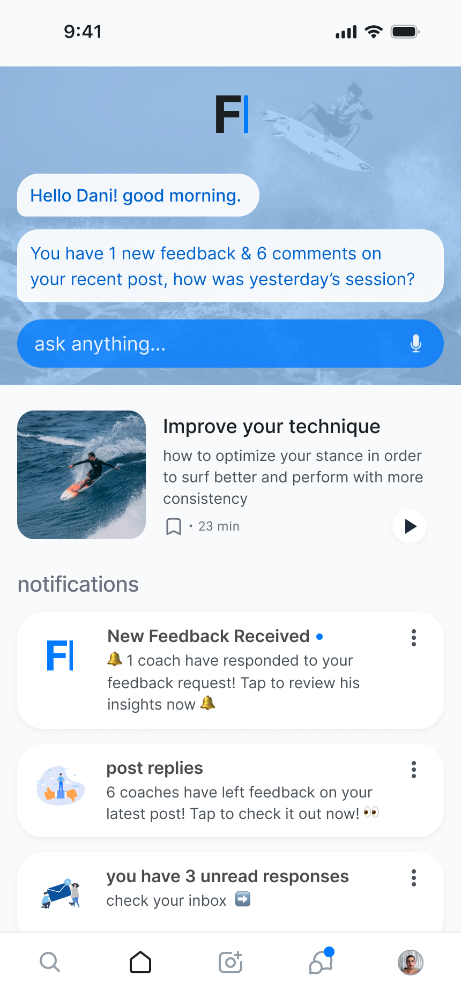
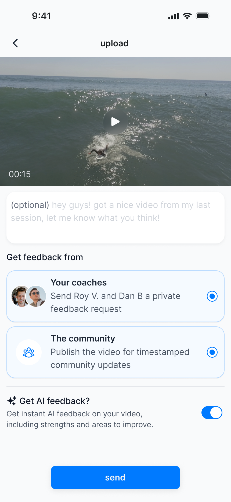
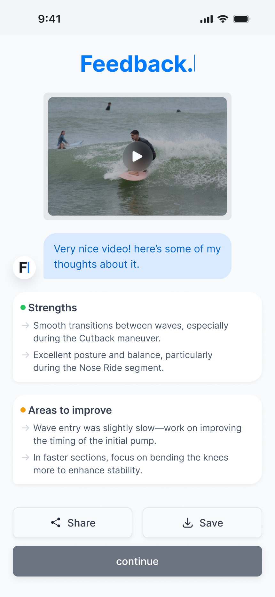
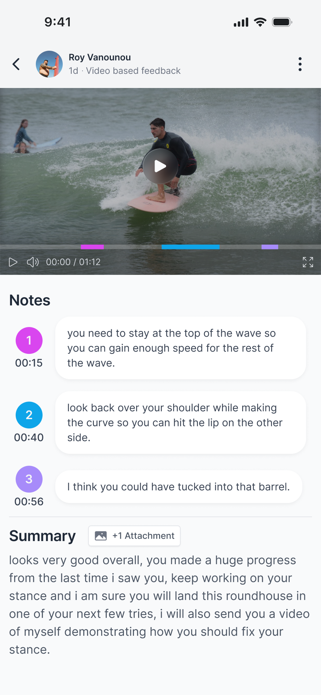

Feedback - Sports Coaching Platform
- Context
- Studio Six B
- Role
- Product Designer
- Type
- Concept · End-to-end Design
- Platform
- Mobile
Feedback is a concept mobile platform connecting athletes and coaches through video-based critique. Athletes can share a performance with the community or send it privately to a paid coach, with optional instant AI analysis. Human feedback stays tied to the relevant moments in the footage.
The product was conceived for athletes across sports. Surfing became the first use case because I know the problem from both sides, after 18 years as a surfer and five as a coach.
Problem Statement
Frequent feedback is essential, but difficult to sustain
User Research
What I learned from athletes and coaches
These findings came from conversations with surfers and coaches. Surfing became the first use case for a broader challenge shared across individual sports.
Athletes
Athletes in individual sports need regular feedback to improve, but often rely on informal critique from friends or more experienced peers.
- Progress depends on frequent, specific critique
- Ongoing professional coaching is a recurring expense many athletes cannot sustain for years
- Athletes often keep videos of their performance and share them with friends or more experienced peers for informal feedback
Coaches
Coaches need ways to build reputation and increase income without adding more physically demanding coaching hours.
- Building a trusted professional reputation takes time
- Earning more often means taking on additional physically demanding coaching sessions
- Public content and community feedback can help coaches demonstrate expertise and build trust
Key research insights
Improvement requires recurring feedback
Progress comes from many small corrections over time, while recurring professional coaching is difficult to sustain financially.
The feedback-seeking behavior already exists
Athletes in individual sports often keep videos of their performance and seek informal feedback from friends or more experienced peers. The behavior exists; reliable expertise is harder to access.
A coach's expertise can scale; their physical time cannot
Income is capped by the hours a coach's body can take. What they know carries no such cap.
Business Opportunity
Make feedback affordable for athletes and expertise scalable for coaches
Solution
One upload, multiple feedback paths
At upload the athlete chooses where the clip goes — to the community or to a coach — and can switch on AI analysis alongside that choice. AI is not a third destination and not a step before or after one; it attaches to the upload itself.
One uploaded performance
+ AI analysis
A toggle at upload. Runs alongside either destination rather than replacing one.
Destination choice
Community
Published to the sport's community, where replies attach to the stretch of footage they describe rather than to the post.
Coach
A private request to a chosen coach, answered on their own schedule. This is the one paid part of the product, priced in tokens.
Everything in the product is free except a personal review from a professional coach. Athletes buy tokens; coaches set their own token price based on experience, skill, ratings, and demand, and later convert what they earn into money. The wallet, purchase, and payout system sits outside the UI shown here.
The product’s value comes from combining timeline-anchored critique, a sport-specific community, and paid professional coaching around the same uploaded performance.
Final Design
Where the model becomes an interface
The screens below are the current state of the interface. I came back to it about a year and a half after the original work and reworked typography, hierarchy, spacing, and consistency — a craft pass on the UI, not a new round of product decisions.
A. Home

Design decisions
Own activity first
The home screen centers feedback and activity around the athlete’s own uploads rather than a generic content feed.
B. Upload and instant AI


Design decisions
One submission flow
Community publishing and private coaching are selected inside the same upload form.
AI as an add-on
AI can be enabled alongside either human-feedback destination.
An immediate general read
AI provides a general response as soon as the upload is complete.
Clear feedback categories
Strengths and areas to improve are separated into two distinct blocks.
C. Community and professional coaching


Design decisions
Feedback on the timeline
Colored segments and time ranges connect community feedback to the movement being discussed.
Multiple perspectives
Feedback from several reviewers stays organized around the same uploaded performance.
Moment-specific coaching
Coach notes are numbered and timestamped to connect each point to the clip.
Supporting context
An attachment and written summary complement the individual moment-specific notes.
Reflection
What I would keep, and what is still open
Strongest decision
Building timeline-anchored community critique around one shared performance. The timestamped annotation is not remarkable by itself — what the product is actually made of is putting that critique, a sport-specific community, AI analysis, and paid professional coaching around the same upload.
Current limitation
The token and payment mechanics were never fully represented in the UI. Coaches set their own price and convert earnings in the model, but the wallet, purchase, and payout flows were not designed — so the paid half of the product is described rather than shown.
To validate next
Whether athletes will pay for an asynchronous review, whether they upload more than once, and whether the upload-to-feedback loop holds when no coach is involved. These are open questions rather than findings: Feedback stayed a concept and was never shipped.